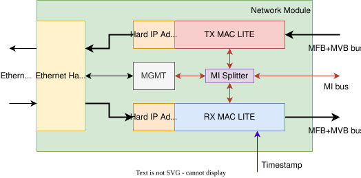
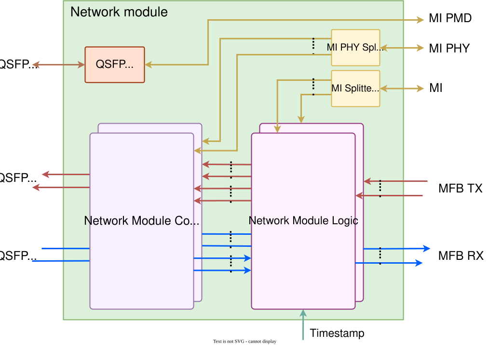
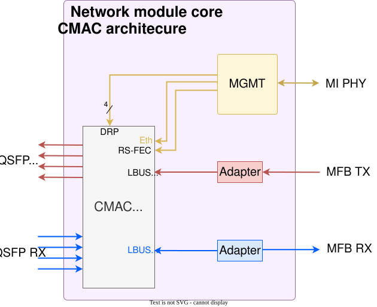
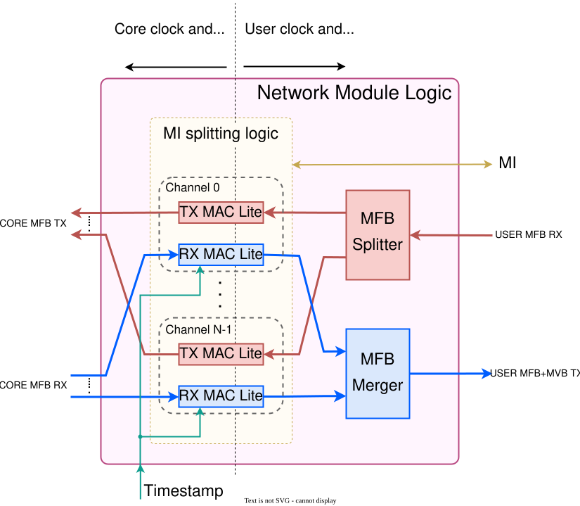
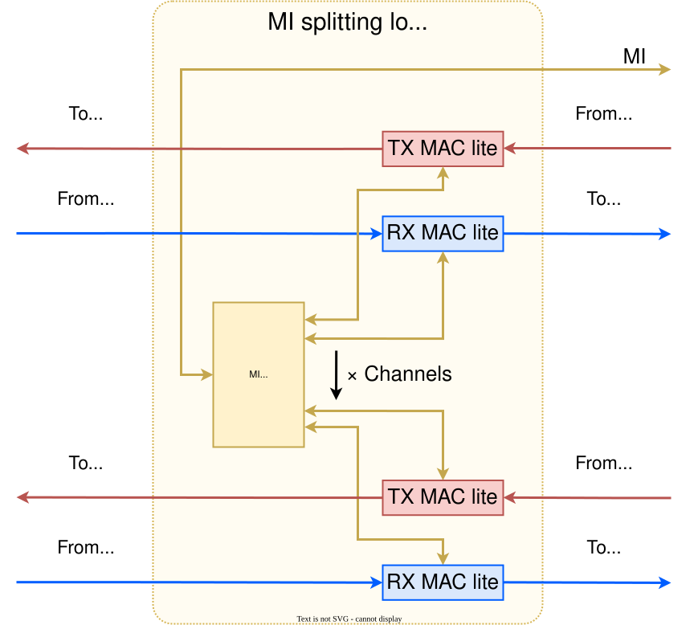

The Network Module¶
Network Module enables connection of the NDK platform to an Ethernet interface(s). The basic architecture is displayed below.
{kind=link}

The Network Module enables connection of the NDK platform to an Ethernet interface(s). The basic architecture is displayed below.
The Network Module utilizes Ethernet hard IP blocks of the FPGA (Stratix 10, Agilex, or UltraScale+) to implement functions of the Ethernet sublayers. These hard IP blocks have their unique client interface. The NDK platform standardly utilizes the MFB protocol (sometimes supported by MVB) for Ethernet frame transfers. Consequently, to connect the hard IPs to the NDK platform, the client interface must be converted to/from MFB. That is the purpose of the Hard IP adapters. The TX and RX MAC Lites implement some of the functions of the MAC sublayer. However, their main feature is the ability to buffer receiving/transmitting frames and to provide a backpressure signal for the adjacent component (on the NDK side).
The whole Network Module (like the rest of the NDK) can be controlled by software. There are CSR registers in the MAC Lites and hard IPs that can be accessed over the MI bus. SW access is described in the following sections:
This was a simple description of the key building blocks of the Network Module. In reality, the Network Module is much more generic. A more implementation-based look at the top level of the Network Module follows.
{kind=link}

There are two main blocks, the Network Module Core and the Network Module Logic. The number of their instances depends on the number of physical ports of the target card. The following sections describe each of the main blocks in more detail: Network Module Core and Network Module Logic. Then there is the QSFP Control unit that enables the configuration of the QSFP transceivers of the NIC over the I2C bus. The Network Module has three separate address spaces (see the MI address space package). Each is represented by one of the three MI buses. Two (MI and MI PHY) are connected to MI Splitters, and one (MI PMD) is directly connected to QSFP Control. The MI PHY Splitter forwards requests to one or more instances of the Network Module Core. The MI Splitter forwards requests to one or more instances of Network Module Logic. The main blocks and their connection between address spaces are in the table below:
MI bus |
Target component |
Address space offset |
Address range |
|---|---|---|---|
MI PHY |
Network Module Core |
MI_ADC_PORT_ETHMOD |
0x00800000 - 0x00FFFFFF |
MI |
Network Module Logic |
MI_ADC_PORT_NETMOD |
0x00008000 - 0x0000FFFF |
MI PMD |
QSFP control |
MI_ADC_PORT_ETHPMD |
0x00003000 - 0x00003FFF |
How to use the Network Module interfaces¶
In the following two subsections, you will learn how to work with the interfaces of the Network Module that connect to the Application (left side of the diagram above). That includes the format in which data should be sent to and received from the Application. The Ethernet packets are sent over the MFB bus, some additional info is sent over the MVB bus, and access to the CSR registers is provided over the MI bus. We strongly recommend reading their specifications before trying to use them.
Receiving packets from the Application¶
Ethernet packets enter the Network Module through the MFB bus (RX_MFB_*) along with its metadata (RX_MFB_HDR).
MFB bus carries the actual packet data, and metadata data contain the Ethernet header.
The packet data is an Ethernet frame without CRC.
The format of the header received from the Application (TX Ethernet HDR) is defined in a special eth_hdr_pack package, displayed below.
- PACKAGE eth_hdr_pack IS
RX Ethernet HDR items description:
Item bit range
Item name
Item description
0 to 15
LENGTH
Length of Ethernet frame in bytes
16 to 23
PORT
Source port/channel number in global format for the entire card; Examples: card with 2 ports each with 4 channels; third channel of the second port = 6; second channel of the first port = 1)
24 to 24
ERROR
Flag of global error, masked OR of all error bits
25 to 25
ERRORFRAME
Flag of frame error
26 to 26
ERRORMINTU
Flag of length below MINTU
27 to 27
ERRORMAXTU
Flag of length over MAXTU
28 to 28
ERRORCRC
Flag of CRC error
29 to 29
ERRORMAC
Flag of MAC error
30 to 30
BROADCAST
Flag of Broadcast MAC
31 to 31
MULTICAST
Flag of Multicast MAC
32 to 32
HITMACVLD
Flag of hit MAC address in TCAM memory
33 to 36
HITMAC
Index of hit MAC address in TCAM memory
37 to 37
TIMESTAMPVLD
Flag of valid timestamp
38 to 101
TIMESTAMP
Timestamp of frame (see TSU module docs for format description)
TX Ethernet HDR items description:
Item bit range
Item name
Item description
0 to 15
LENGTH
Length of Ethernet frame in bytes
16 to 23
PORT
Destination port/channel number in global format for the entire card; Examples: card with 2 ports each with 4 channels; third channel of the second port = 6; second channel of the first port = 1)
24 to 24
DISCARD
DRAFT ONLY: Discard frame before transmit to network
Transmitting packets to the Application¶
Ethernet packets are sent to the Application over two buses: the MFB (TX_MFB_*) and the MVB (TX_MVB_*).
The MFB bus carries the actual packet data, and the MVB bus carries the packet’s metadata.
Both buses have independent flow control.
Warning
Even though the MVB and MFB buses are independent, data must be transferred over both of them.
If they are not, for example, when one bus has the TX_*_DST_RDY set permanently to 0, a buffer or a FIFO memory will fill up, and the data transfers will get stuck.
The packets are transferred as Ethernet frames without CRC, which is checked and removed in the Network Module Core.
An eventual error is signaled by the ERRORCRC bit of the header.
The minimum allowed length of the packet data is 60B (configurable, but setting it lower than that will likely result in undefined behavior).
The Network Module signals undersized packets by setting the ERRORMINTU bit of the header.
All header items are also listed in the eth_hdr_pack package displayed in the previous subsection (in the RX Ethernet HDR part).
SW access to the Network Module Cores and Network Module Logics¶
The Network Module Core(s) is/are accessed over the MI PHY bus. Each Core has its own address space offset from each other by 0x00200000. According to this offset, the MI PHY Splitter forwards the MI transactions to the target Core(s). The first instance (Network Module Core (0)) is connected to the first output of the MI PHY Splitter. Its base address is 0x0000000, which results in an address range from 0x000000 to 0x1FFFFF. The second instance (Network Module Core (1)) is connected to the second output of the MI PHY Splitter and its base address is 0x0200000 (=> address range 0x200000 - 0x3FFFFF). As mentioned, the Network Module Logics use the second MI Splitter (same component, just a different instance). The Network Module Logics are connected to the MI Splitter the same way as the Network Module Cores. The only difference is the address offset, which is 0x2000.
Note
To get a complete register address in one of the components of the Network Module, you must add the appropriate base address of the Network Module (as defined in the MI address space package) to it.
The addressing of both main blocks is described in the tables below:
Output ID |
Target component |
Address range |
|---|---|---|
0 |
Network Module Core (0) |
0x000000 - 0x1FFFFF |
1 |
Network Module Core (1) |
0x200000 - 0x3FFFFF |
… |
… |
… |
N |
Network Module Core (N-1) |
(0x000000 + (N-1)*0x200000) - (0x000000 + N*0x200000 - 1) |
Output ID |
Target component |
Address range |
|---|---|---|
0 |
Network Module Logic (0) |
0x0000 - 0x0FFF |
1 |
Network Module Logic (1) |
0x2000 - 0x2FFF |
… |
… |
… |
N |
Network Module Logic (N-1) |
(0x0000 + (N-1)*0x2000) - (0x0000 + N*0x2000 - 1) |
Network Module Core¶
The so-called Network Module Core is a subcomponent of the Network Module. It contains the required hard IP(s), appropriate adapters, and an MI component for reconfiguring the hard IP(s). Right now, the Network Module can use three different Ethernet hard IPs: for Intel FPGA, it is the E-Tile or the F-Tile, and for the Xilinx FPGA, it is the CMAC. For the F-Tile, there are two IP core variants: F-Tile and F-Tile_Multirate. The F-Tile and F-Tile_Multirate contain an additional subcomponent system, which makes it more readable. According to the selected NIC (and therefore the type of hard IP), one of the four architectures of the Network Module Core (with the proper hard IP) is used. The hard IP is connected directly to the FPGA’s serial QSFP pins (left side of the diagram). On the right side, it is connected to the Network Module Logic. The three basic architectures of the Network Module Core are displayed below.
{kind=link}
{kind=link}
{kind=link}

The F-Tile hard IP core is instantiated once per each subcomponent. Each Ethernet channel has just one generated subcomponent, and it contains parts such as “MGMT, drp_bridge, MAC_Loopback”. The same goes for the F-Tile_Multirate, but it also contains just one Dynamic Reconfiguration Controller (DRC), which is instantiated in the first subcomponents. Subcomponents that do not contain the DRC are connected to the DRC located in the first subcomponent through intel AVMM Interface (this connection is made by constraints in “multirate.qsf”). Use DRC to reconfigure the IP’s parameters such as speed, type of FEC, etc. The QSFP interfaces (as well as the XCVR reconfiguration interfaces) are split among the subcomponents evenly. There are eight interfaces altogether, so each hard IP has 8/number_of_channels interfaces. For more information about the F-Tile Multirate, use F-Tile_Multirate.
{kind=link}
{kind=link}
The E-Tile hard IP core is always just one instance, no matter the number of Ethernet channels or their speed, it is the same with CMAC. That means that the instantiated hard IP always has four QSFP interfaces and four XCVR reconfiguration interfaces.
CMAC have same architecture as E-Tile, however, the CMAC is instantiated only in one variant: with one 100 GE channel.
On the left side of the hard IP(s) is a pair of adapters for each channel. The adapters convert the hard IP’s client interface to the MFB interface. E-tile’s client interface is the Avalon Streaming (AVST) interface. F-tile can also utilize the AVST interface (for speeds up to 100 GE) or the MAC segmented interface (for all supported speeds). F-tile hard IP cores always use the MAC segmented interface in our designs. CMAC’s client interface is the LBUS interface. The Network Module Core always uses the appropriate adapters (according to the hard IP).
Each channel on both E-tile and F-tile architectures also includes a diagnostic post-MAC loopback module, which (when enabled via the MGMT) re-transmits received frames back to the link partner. We call this mode the “PCS reverse loopback”. When the loopback is active, received frames are also passed to the Application as in normal mode. However, the frames transmitted from the Application are discarded. See the nfb-eth tool documentation for instructions on how to turn the loopback on/off.
SW access to the reconfiguration interfaces¶
Software access is provided via the management unit (MGMT), which is instantiated per channel. This component employs an MDIO (Management Data Input/Output) interface. Its main task is to provide access to the reconfiguration interfaces of the hard IP(s). You can use it, for example, to turn the PMA loopback on and off. The nfb-eth tool is used for this. The MGMT unit itself is yet to be documented. The addresses of the available CSR registers in reconfiguration interfaces are recorded in the following documents from Intel and Xilinx.
Network Module Logic¶
The Network Module Core is connected to Network Module Logic which contains TX and RX MAC Lites.
There is one MAC Lite pair (TX + RX) for each Ethernet channel, and they are connected one-on-one to appropriate adapters located in the Network Module Core.
On the other side, TX MAC Lites receive data from the MFB Splitter, which splits the incoming stream of MFB data into channels (according to the PORT item of the header, see the eth_hdr_pack above).
RX MAC Lites then feed the inputs of the MFB merger, which merges the MFB data from the individual channels into one output stream.
The last component in the picture is the MI splitting logic block, representing that all of the MAC Lites are somehow connected to the MI bus.
More information about this block is mentioned in the following subsection.
{kind=link}

The MAC Lites split the whole Network Module into two clock domains (not considering the MI clock domain, which is for the MI bus only).
In the current setting, the clock signal in the left clock domain has twice the frequency of the clock signal in the right clock domain.
That is because we want to avoid timing problems further in our designs.
To achieve the same throughput in both clock domains, the width of the MFB bus is doubled in the slower clock domain (the one on the right).
The Network Module Logic is connected to the TimeStamp Unit (TSU), which generates timestamps.
The timestamps are inserted per frame into their header (the TIMESTAMP and TIMESTAMPVLD items of the header).
SW access to the MAC Lites¶
The MI splitting logic block shown in the diagram below is a virtual block that exists only to explain the Network Module (it is not an actual component). The purpose of this subsection is to describe the access to the MAC Lites for multi-channel configurations. The diagram below shows how the MAC Lites are connected to the MI bus.
{kind=link}

The diagram above tries to illustrate which output port of the MI Splitter is connected to which MAC Lite. In a MAC Lite pair (TX + RX), TX MAC Lite always comes first, meaning it is connected to the output with a lower ID. The corresponding RX MAC Lite (of the same channel) comes right after the TX MAC Lite (connects to output with ID incremented by 1). That means a MAC Lite pair is always connected to adjacent output ports of the MI Splitter. The first MAC Lite pair (which belongs to channel 0) takes the first two outputs. If there are multiple channels, the following two outputs are connected to the second MAC Lite pair, which belongs to channel 1. MAC Lite pairs for the following channels are connected subsequently in the same way. The MAC Lites are offset by 0x200, and MAC Lites in different ports are additionally offset by 0x2000 (enough for 8 Ethernet channels per port). However, that is not the concern of the MI Splitter here but in the top-level of the Network Module. To create a complete address of a MAC Lite register, add the address of the register, the channel offset, the port offset, and the offset of the Network Module Logic (MI_ADC_PORT_NETMOD in the MI address space package). To show the connections of the MAC Lites, an example of the MAC Lite address spaces for a configuration with two 4x25 GE ports follows.
Notation: TX_MAC_LITE(port_id)(channel_id), RX_MAC_LITE(port_id)(channel_id).
Output ID (MI Splitter - Network Module top) |
Output ID (MI Splitter - Network Module Logic) |
Target component |
Address range |
|---|---|---|---|
0 |
0 |
TX_MAC_LITE(0)(0) |
0x0000 - 0x01FF |
0 |
1 |
RX_MAC_LITE(0)(0) |
0x0200 - 0x03FF |
0 |
2 |
TX_MAC_LITE(0)(1) |
0x0400 - 0x05FF |
0 |
3 |
RX_MAC_LITE(0)(1) |
0x0600 - 0x07FF |
0 |
4 |
TX_MAC_LITE(0)(2) |
0x0800 - 0x09FF |
0 |
5 |
RX_MAC_LITE(0)(2) |
0x0A00 - 0x0BFF |
0 |
6 |
TX_MAC_LITE(0)(3) |
0x0C00 - 0x0DFF |
0 |
7 |
RX_MAC_LITE(0)(3) |
0x0E00 - 0x0FFF |
1 |
0 |
TX_MAC_LITE(1)(0) |
0x2000 - 0x21FF |
1 |
1 |
RX_MAC_LITE(1)(0) |
0x2200 - 0x23FF |
1 |
2 |
TX_MAC_LITE(1)(1) |
0x2400 - 0x25FF |
1 |
3 |
RX_MAC_LITE(1)(1) |
0x2600 - 0x27FF |
1 |
4 |
TX_MAC_LITE(1)(2) |
0x2800 - 0x29FF |
1 |
5 |
RX_MAC_LITE(1)(2) |
0x2A00 - 0x2BFF |
1 |
6 |
TX_MAC_LITE(1)(3) |
0x2C00 - 0x2DFF |
1 |
7 |
RX_MAC_LITE(1)(3) |
0x2E00 - 0x2FFF |
Supported Ethernet Hard IP configurations
Notation: NUMBER_OF_CHANNELS x SPEED
E-Tile on Intel Stratix 10 or Agilex FPGA =
1x100GE, 4x25GE, 4x10GEF-Tile on Intel Agilex FPGA =
1x400GE, 2x200GE, 4x100GE, 8x50GE, 2x40GE, 8x25GE, 8x10GECMAC on Xilinx Ultrascale+ =
1x100GE
References